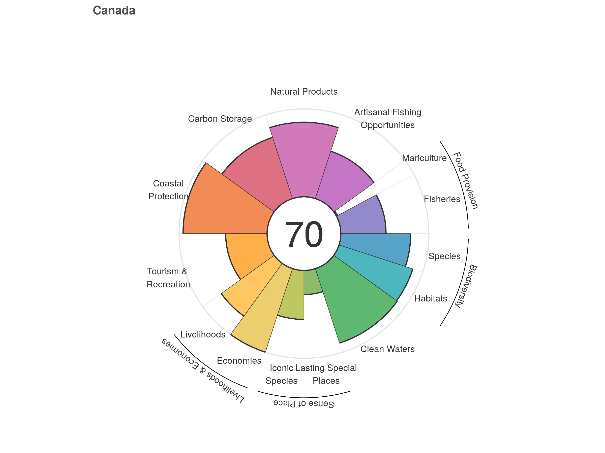

| Goal | Abbreviation | Description |
|---|---|---|
| Artisanal Fishing Opportunity | AO | The opportunity for small-scale fishers to supply catch for their families, members of their local communities, or sell in local markets |
| Biodiversity | BD | The conservation status of native marine species and key habitats that serve as a proxy for the suite of species that depend upon them |
| Carbon Storage | CS | The condition of coastal habitats that store and sequester atmospheric carbon |
| Clean Waters | CW | The degree to which ocean regions are free of contaminants such as chemicals, eutrophication, harmful algal blooms, disease pathogens, and trash |
| Coastal Livelihoods and Economies | LE | Coastal and ocean-dependent livelihoods (job quantity and quality) and economies (revenues) produced by marine sectors |
| Coastal Protection | CP | The amount of protection provided by marine and coastal habitats serving as natural buffers against incoming waves |
| Food Provision | FP | The sustainable harvest of seafood from wild-caught fisheries and mariculture |
| Natural Products | NP | The natural resources that are sustainably extracted from living marine resources |
| Sense of Place | SP | The conservation status of iconic species (e.g., salmon, whales) and geographic locations that contribute to cultural identity |
| Tourism and Recreation | TR | The value people have for experiencing and enjoying coastal areas through activities such as sailing, recreational fishing, beach-going, and bird watching |
Brief Anatomy of OHI Scores
We define ocean health as the sustainable delivery of ten widely-held public goals for ocean ecosystems (Table 2.1). These goals represent the full suite of benefits that people want and need from the ocean, including the traditional ‘goods and services’ people often consider (e.g., fish to eat, coastal protection from nearshore habitats) as well as benefits less commonly accounted for, such as cultural values and biodiversity. Within each region, scores, ranging from 0 to 100, are calculated for the 10 goals (section 5.2). Four of the goals are calculated from 2 subgoals. The subgoals are calculated independently (i.e., they are treated as if they are goals) and then combined into the goal status score (Table 2.2).
10 Goals of OHI
Table 2.1. The 10 goals of the Ocean Health Index
Subgoals
Table 2.2. Subgoals used to calculate 4 of the Ocean Health Index goals
| Subgoal | Goal | Abbreviation | Description |
|---|---|---|---|
| Habitat | Biodiversity | HAB | The status of key habitats that serve as a proxy for the suite of species that depend upon them |
| Species condition | Biodiversity | SPP | The conservation status of native marine species |
| Livelihoods | Coastal livelihoods and economies | LIV | Coastal and ocean-dependent livelihoods (job quantity and quality) produced by marine sectors |
| Economies | Coastal livelihoods and economies | ECO | Coastal and ocean-dependent economies (revenues) produced by marine sectors |
| Fisheries | Food provision | FIS | The sustainable harvest of seafood from wild-caught fisheries |
| Mariculture | Food provision | MAR | The sustainable harvest of seafood from mariculture practices |
| Iconic species | Sense of place | ICO | The conservation status of iconic species (e.g., salmon, whales) that contribute to cultural identity |
| Lasting special places | Sense of place | LSP | The conservation status of geographic locations that contribute to cultural identity |
Goal (and subgoal scores) are calculated using several variables (referred to as “dimensions”, Table 2.3). Goal scores (Section 5.2) are calculated as the average of current status (Section 5) and likely future status. Likely future status (Section 5.3) is the current status modified by variables (resilience, pressures, and trend) expected to influence future status.
Dimensions
Table 2.3. Dimension used to calculate an OHI goal score Goal scores are the average of current and likely future status. Likely future status adjusts current status scores based on pressures and resilience variables acting on the goal as well as recent trends in status.
| Dimension | Subdimension | Description | More information | Calculating |
|---|---|---|---|---|
| Current status | - | Current state of the goal relative to the desired “reference point”. Values range from 0-100. | Section 6. Goal models and data | Calculated using functions in ohi-global repo: https://github.com/OHI-Science/ohi-global/blob/draft/eez/conf/functions.R and the scenario_data_years.csv file (in same folder) |
| Predicted future status | Resilience | Variables such as good governance and ecological factors that provide resilience to pressures, and thus, are likely to improve future status. Values range from 0-100 | Section 5.3 Likely future status dimensions | Calculated using functions in ohicore package.And, files: resilience_categories.csv and resilience_matrix.csv located here: https://github.com/OHI-Science/ohi-global/tree/draft/eez/conf |
| Predicted future status | Pressure | Pressures stress the system and threaten future delivery of benefits, and thus, are likely to reduce future status. Values range from 0-100 | Section 5.3 Likely future status dimensions | Calculated using function in ohicore package. And, files: pressure_categories.csv and pressures_matrix.csv, located here: https://github.com/OHI-Science/ohi-global/tree/draft/eez/conf |
| Predicted future status | Trend | Average yearly change in status (typically estimated using most recent 5 years of data) multiplied by 5 to esimate five years into the future. Units are proportional change (absolute change/year is divided by the value of the earliest year) and range from -1 to 1 | Section 5.3 Likely future status dimensions | Calculated using functions from ohi-global repo: https://github.com/OHI-Science/ohi-global/blob/draft/eez/conf/functions.R and the scenario_data_years.csv file (in same folder) |

Finally, an overall Index score for each region is calculated by averaging the goal scores (Figure 2.2).
